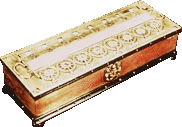

Cours sur l'histoire de l'ordinateur
Découvrons son histoire...
L’ancêtre de l’ordinateur fut d’abord une machine de calcul, que l’on doit à Blaise Pascal, inventeur des
premiers calculateurs mécaniques (la Pascaline, datant de 1642), et ayant permis de nombreuses innovations dans
l’histoire de l’ordinateur.

Image d'un calculateur mécanique, la pascaline
Le premier véritable ordinateur date de 1948. On le doit à l’américain John Lentz, ayant mit au point ce petit
ordinateur. Ce-dernier pouvait être actionné par une seule personne uniquement, et se contrôlait à l’aide d’un
simple clavier. Il ne sera pourtant commercialisé qu’en 1956.
Dans les années 1950, des nouveaux langages de programmation (comme le A-0 System ou encore l’IPL) font leur
apparations, permettant la simplification, même si loin d’être simple, de la programmation et création
d’ordinateurs
C’est dans les années 1970 que les premiers systèmes d’exploitation sont crées, on note parmi eux le premier OS
(Operating System) d’Apple ; « l’Apple DOS 3.1 ».
En 1975, la société IBM commercialise son tout premier PC, l’IBM 5100. Un énorme succès, avec un prix variant
entre 9 000 et 20 000 dollars. Il était transportable et se dotait d’un petit écran (diagonale de 5 pouces) mais
très net cependant. Ce succès fut vite suivi de l’IBM 5110, sorti en 1978, corrigeant des défauts du précédent
modèle.
C’est aussi aux alentours de 1975 qu’Apple sortira son premier ordinateur personnel ; basiquement appelé « Apple
Computer », une création du fameux Steve Jobs, épaulé par Steve Wosniak. L’Apple II sortira deux ans après et se
vendra à très grande échelle.

Image d'un ordinateur Apple II
En 1985, le 20 novembre, est dévoilé le système d'exploitation "Windows 1.0" par Bill Gates, ancien employé de chez Apple,
retiré très vite suite à une erreur de développement et remplacé par "Windows 1.01", coûtant 99 dollars. Actuellement, la société
Microsoft en est à la version "Windows 10", la plus répandue sur le marché, avec un prix environnant les 150 euros.
Premier logo de Windows 1.0
C’est dans les années 1990 que le bug de l’an 2000 fera du bruit, les gens craignant un bug suite au passage des
machines à la nouvelle décennie, certaines ne pouvant pas afficher « 2000 ». Il représente un bouleversement
dans le monde de l’informatique et des ordinateurs car la correction du bug est aussi à l’origine de nouvelles
manières de développer.
Depuis, les innovations ne cessent de révolutionner le monde des ordinateurs, et semblent loins d’arriver à leur
terme. Chaque année, ce sont de véritables avancées qui sont dévoilées.
Aujourd'hui,
il existe de nombreux composants informatiques, tous de plus en plus puissants,
tous utilisés à des fins différentes, aussi bien pour jouer aux jeux vidéos que pour travailler : de la bureautique,
ou miner des cryptomonnaies.
Nos sources
L'histoire
- Connaissances personnelles
- Wikipedia
- Comment ça marche
- Scriptol